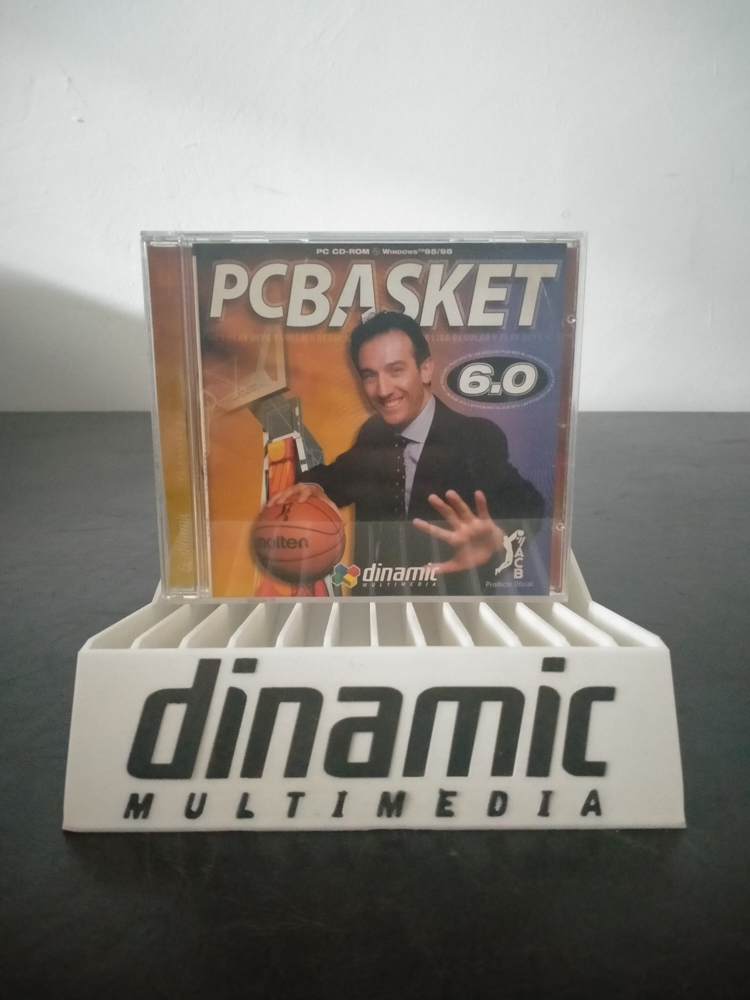

Ficha #000000
PC Basket 6.0
PC Basket 6.0 es un simulador de baloncesto desarrollado y publicado por la compañía española Dinamic Multimedia para la temporada 1997-98. Combina la gestión integral de clubes con la simulación de partidos en 3D, permitiendo administrar plantillas, fichajes, tácticas y otros aspectos deportivos de los equipos de la Asociación de Clubes de Baloncesto. Su base de datos profesional reúne información sobre jugadores, entrenadores, clubes y más de 150 equipos europeos, constituyendo una valiosa referencia estadística del baloncesto continental de finales de los años noventa. La presencia del entrenador Aíto García Reneses en la portada y el distintivo de producto oficial de la ACB reflejan la estrecha vinculación comercial de esta entrega con la competición española. Es una obra representativa de la línea de simuladores deportivos de Dinamic Multimedia y de la transición de la saga PC Basket hacia entornos Windows y partidos tridimensionales.
- Formato
- Jewel Case
- Plataforma
- Win95 Win98
- Género
- Simulación deportiva Gestión deportiva Baloncesto Estrategia
- Serie
- Todos Jewel Case Dinamic multimedia
- Desarrollador
- Dinamic Multimedia
- Distribuidor
- Dinamic Multimedia
- EAN
- —
Contenido de la edición
- Caja jewel case
- CD-ROM
Preservación
- Protección
- No determinado
- Formato recomendado
- ISO
- Jugable en virtualización
- Sí
Se recomienda preservar el CD-ROM mediante una imagen completa y documentar la versión del ejecutable, la base de datos de la temporada y cualquier actualización disponible. Al no haberse verificado el sistema anticopia de esta edición concreta, conviene conservar también una copia sectorial del soporte original.